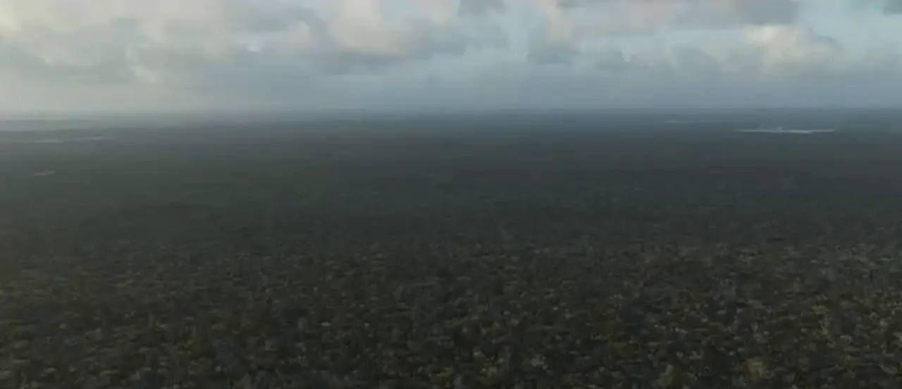

Tulum · Riviera Maya
Desarrollos que nacen de la selva en lugar de imponerse sobre ella. Veinticinco años construyendo en la Riviera Maya.
Tres pilares: diseño minimalista, atención al detalle, conexión con la naturaleza.